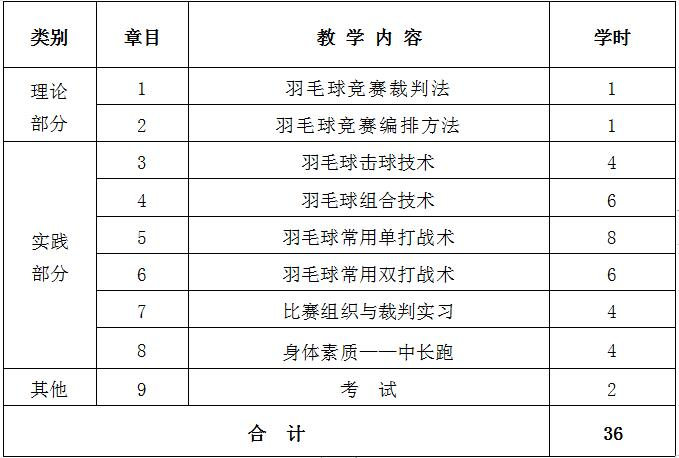
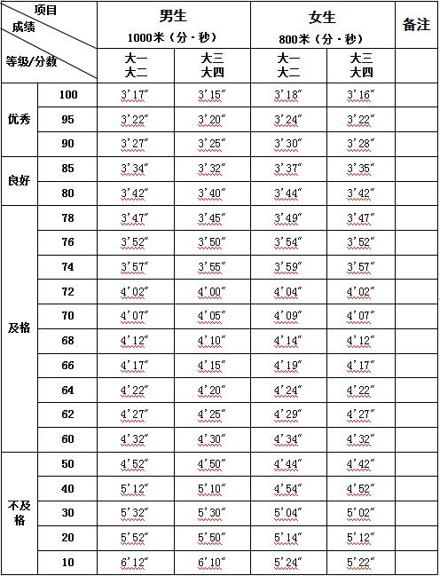

课程管理
|
课程名称 |
公共体育--羽毛球（Ⅱ） |
课程代码 |
TX031099 |
|
课程类型 |
√通识课 □学科（专业）基础课 □专业发展课 |
课程性质 |
√必修课 □选修课 |
|
开课单位 |
体育学院 |
适用专业 |
非体育专业 |
|
总学时数 |
36 |
周学时数 |
2 |
|
课程学分 |
1 |
编 写 人 |
朱敬敬 |
|
编写时间 |
2017.07.20 |
审 批 人 |
刘其龙 |
一、教学目的
本课程通过理论与实践教学活动，使学生了解羽毛球的起源与发展，掌握羽毛球的基本知识、基本技战术和竞赛裁判知识，全面提高学生的身体素质水平。通过羽毛球课教学， 培养学生的热爱祖国情操、吃苦耐劳的精神、顽强拼搏的作风、高尚的道德情操和良好的心理素质。
本课程的具体任务是：
（一）掌握羽毛球运动的基本技术和相关理论，培养学生树立终身体育观念。
（二）在学习羽毛球技术中，注重培养学生克服困难、顽强拼搏精神及在健康快乐的锻炼中， 提高灵敏、协调能力，改善心肺功能，全面提高身体素质。
（三）掌握羽毛球运动的基本技术和相关理论，培养学生树立终身体育观念。
（四）在掌握一项技巧和运动技能的同时，全面发展学生的身体素质。
二、重点与难点
（一）重点：通过教学使学生能够熟练掌握羽毛球的基本知识与技术。
（二）难点：羽毛球技术与战术的有机结合、羽毛球教学与训练。
三、基本内容与要求
理论部分
第1章 羽毛球竞赛裁判法
1.1 羽毛球竞赛的分类
1.2 羽毛球竞赛项目
1.3 羽毛球竞赛规程的制定
1.4 羽毛球常用的竞赛方法
（一）教学目的：了解羽毛球竞赛规则和裁判规则，掌握羽毛球的比赛场地、发球规则、挑边、交换场区、违例以及对羽毛球裁判员的规则要求等。
（二）重点与难点：羽毛球的竞赛规则和羽毛球裁判规则。
（三）基本内容：羽毛球的比赛场地、发球规则、挑边、交换场区、违例等规则，对裁判员、发球裁判、司线员、记分员的规则要求等。
第2章 羽毛球竞赛编排方法
2.1 编排前的准备工作
2.2 抽签
2.3 赛程表的制定
2.4 编排水平的评价（检查）
2.5 汇编比赛秩序册
（一）教学目的：了解羽毛球竞赛的组织工作程序和编排工作程序，掌握羽毛球竞赛的种类和竞赛方法， 熟悉羽毛球竞赛的组织与编排工作。
（二）重点与难点：羽毛球竞赛规程的制定、竞赛方法、赛程表编排与制定。
（三）基本内容：羽毛球主要技术的内容、动作规范及其教学训练方法， 主要基本技术在战术中的作用，羽毛球专项身体素质训练。
技术部分：
第3章 羽毛球击球技术
3.1 后场：杀球。
3.2 中场：接杀球。
3.3 网前：推、勾、扑、拨、放网。
（一）教学目的：掌握羽毛球击球技术。
（二）重点与难点：后场、中场、网前击球技术。
（三）基本内容：后场杀球；中场接杀球；网前推、勾、扑、拨、放网。
第4章 羽毛球组合技术
4.1 高球、吊球、上网搓、推、勾、扑（从定点直线、斜线上网到不定点上网）
4.2 高球、杀球、上网搓、推、勾、扑（从定点直线、斜线上网到不定点上网）
（一）教学目的：掌握羽毛球基本技术的组合练习。
（二）重点与难点：羽毛球基本技术组合。
（三）基本内容：基本技术组合一（高球、吊球、上网搓、推、勾、扑球）； 基本技术组合二（高球、杀球、上网搓、推、勾、扑球）。
第5章 羽毛球常用单打战术
5.1 发球抢攻战术
5.2 接发球战术
5.3 逼反手战术
5.4 平高球压底线战术
5.5 拉吊结合杀球战术
5.6 杀、吊上网战术
5.7 过渡球战术
5.8 防守反攻战术
（一）教学目的：了解常用的羽毛球单打战术。
（二）重点与难点：羽毛球单打战术。
（三）基本内容：单打发球抢攻战术；单打接发球战术；单打逼反手战术；单打平高球压底线战术； 单打拉吊结合杀球战术；单打杀、吊上网战术；单打过渡球战术；单打防守反攻战术。
第6章 羽毛球常用双打战术
6.1 发球抢攻战术
6.2 接发球战术
6.3 攻人战术
6.4 攻中路战术
6.5 攻后场战术
6.6 后攻前封战术
（一）教学目的：了解常用的羽毛球双打战术。
（二）重点与难点：羽毛球双打战术。
（三）基本内容：双打发球抢攻战术；双打接发球战术；双打攻人战术；双打攻中路战术；双打攻后场战术； 双打后攻前封战术；双打防守战术。
第7章 比赛组织与裁判实习
第8章 身体素质——中长跑
8.1 起跑和起跑后的加速
8.2 途中跑、终点跑
8.3 中长跑的呼吸
8.4 全程跑：1000米（男生）、800米（女生）
（一）教学目的：通过教学使学生掌握起跑和起跑后的加速、途中跑、终点跑等中长跑的基本技术，学会正确的呼吸方式，发展耐力素质，进一步增强心肺功能。
（二）重点与难点：途中跑技术；中长跑的呼吸。
（三）基本内容：起跑和起跑后的加速、途中跑、终点跑等基本技术；全程跑。
四、授课内容学时分配
五、成绩考核：
（一）考核方式：现场测试。
综合成绩＝平时成绩×30%＋考试成绩×70%，考试成绩＝专项成绩×70%＋身体素质成绩×30%。 每一部分都有定量或定性的评分标准，其中身体素质为每学期的必考项目，身体素质考试内容为男子1000米、女子800米。
（二）考试内容：羽毛球专项技术、身体素质（男子1000米、女子800米）。
（三）评分标准：
1.平时成绩
（1）课堂表现（占50%）
课堂学习态度是否积极、认真、投入，技术、技能所表现出的进步程度。
（2）出勤情况（占50%）
每缺勤一次扣3分，旷课一次扣6分，缺勤4次及以上者或旷课2次及以上者取消考试资格。
2. 羽毛球专项技术：
（1）正手击高远球：直线、对角各5次，占专项技术成绩的70%。
①优秀：命中9-10个以上，动作规范，击球连贯，身体各部位协调 91—100分
②良好：命中7-8个，动作较正确、规范，身体各部位较为协调 81—90分
③中等：命中6个，动作基本正确、规范，身体各部位不太协调 71—80分
④及格：命中5个，动作有连续性、较慢，身体各部位协调性差 61—70分
⑤不及格：命中4个以下，身体各部位不协调，击球部位不准确 60分以下
（2）战术技评（占专项技术成绩的30%）
通过比赛观察其选位跑动，技战术运用的合理性，掌握攻守转换时机的灵活性等。
3. 身体素质（1000米或800米）：评分标准见表1。
六、教材与参考书目
（一）使用教材：
[1] 《乒乓球、羽毛球、网球》，清华大学出版社，2015年8月。
（二）参考书目：
[1] 《手把手教你打羽毛球》，人民邮电出版社，2016年7月。
[2] 肖杰.《羽毛球运动理论与实践》，北京：人民体育出版社，2011年。
[3] 《羽毛球全攻略 技术、战术与训练》，人民邮电出版社，2016年8月。
[4] 《羽毛球竞赛规则》北京体育大学出版社，2017年1月。
[5] 朱建国，《羽毛球运动教学与训练教程》，清华大学出版社，2015年3月。
表1 身体素质考核评分标准
注：数据来源于国家学生体质健康标准（2014年修订）。